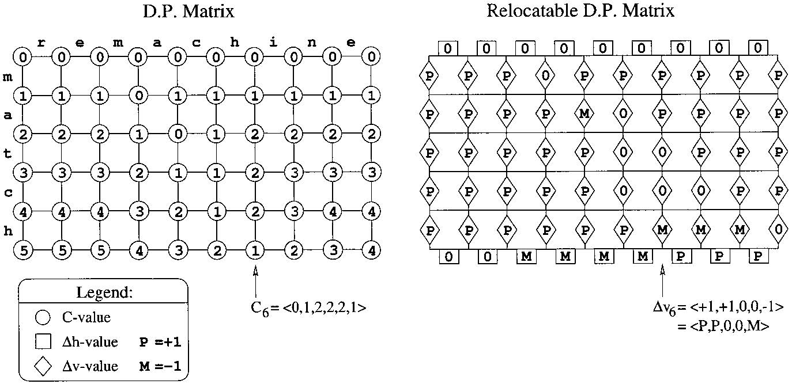

The Problem
Here, we investigate approaches to parallelizing the approximate string matching problem, a specific case of the classical edit distance problem. The edit distance problem is the canonical dynamic programming problem and involves finding the number of individual character insertions, deletions, and substitutions to transform one string into another string. The related approximate string matching problem, investigated here, involves finding all positions in one string such that some substring ending at that position in the string has an edit distance less than a specified $k$ with a second string. As a dynamic programming problem, the traditional solution involves a chain of dependencies that renders parallelization extremely difficult, thus, we investigate several different approaches to attempt to resolve this issue.
Our Approach
We took two approaches to this problem: directly parallelizing the traditional bottom-up dynamic programming algorithm, and a parallel bit-vector algorithm, and offer performance comparisons between the two different approaches.
Parallel Dynamic Programming
In the traditional dynamic programming (DP) approach, the edit distance can be obtained by evaluating a NxM matrix where N and M are the lengths of the inputs. In this DP matrix, the value of each entry depends exactly on the values of the entries above, to the left, and to the upper-left. This results in anti-diagonal rows whose entries may be evaluated independently (provided that the previous diagonals have already been computed). The number of diagonals is precisely N+M+1; however, they are not of uniform lengths. This poses a challenge in data layout and work allocation between multiple threads.
Bit-vector Approach
The bit-vector approach makes the insight that the dynamic programming matrix created in the bottom-up approach is fully defined by the differences in the values of adjacent cells, and that furthermore, these differences are either -1, 0, or 1.
For example, in the below image, we can see the complete dynamic programming matrix for approximate string matching of ‘match’ against ‘remachine’. The right-hand side represents the same matrix, but displays the only differences between vertically adjacent cells, using P to represent +1 and M to represent -1.
 It turns out that when represented in this way, we can use a single bit for each cell and compute each column of the delta matrix entirely in parallel using only bitwise operations! Details of this approach can be found in the original paper [1].
However, while this seems very promising, parallelizing the algorithm for inputs longer than the number of bits in the largest primitive (usually 64 bits for a long long) proves to be difficult as a portion of the algorithm relies on the carrying property of addition, which would require an arbitrary precision addition implementation and is itself very difficult to perform in parallel effectively.
The original paper does not offer a satisfactory solution to this problem, only describing an approach that sequentially processes word-sized blocks of the dynamic programming matrix, effectively limiting the speedup to a factor of 64 and failing to take advantage of considerable parallel capabilities of modern processors and graphics cards. Therefore, we are looking into effective arbitrary precision addition implementations and possible other approaches to this problem in an attempt to better utilize the numerous processing units on CPUs and GPUs and achieve an even greater speedup.